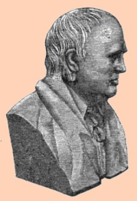

by
Stefan Bielinski
Abraham Van Vechten was born in December 1762. He was the youngest son of Teunis and Judike Ten Broeck Van Vechten of Catskill. His older brother, Teunis T. Van Vechten, also became a resident of Albany.
Abraham Van Vechten received a basic education in Esopus. He was a schoolmate and lifelong friend of Stephen Van Rensselaer, III. He then attended Columbia College. Afterwards, he clerked at the Albany law office of John Lansing, Jr. He then moved to the Mohawk Valley and began to practice law. He quickly gained repute in the handling of real estate matters and in Federalist politics. In 1790, his household was configured on the census for the town of Caughnawaga.
In May 1784, he married Watervliet resident Catharina Schuyler at the Albany Dutch church. The marriage may have produced as many as fifteen children! Both parents were members and pewholders at the Albany Dutch church. As late as 1825, he pledged a substantial sum toward the future of religious higher education.
In 1788, he began a long association with the Albany government when he was retained by the city to take action against squatters on the city's Fort Hunter lands.
Settling in Albany during the 1790s, over the next three decades he developed an extensive legal practice. He trained many attorneys including his nephew and protégé, Teunis Van Vechten. His house on Market Street was a center of legal business in Albany for many years. One of his students recalled his training under Van Vechten and lifelong association with his mentor.
At the same time, he held a number of public offices including that of city recorder (1797-1808), State senator, member of the New York State Assembly, and Attorney General - first in 1810. In 1792, he was elected one of the first directors of the Bank of Albany. This city father belonged to and served as an officer of a number of community organizations.
Beginning in 1813, the city directory identified him as the Attorney General with a residence at 3 Market Street (near the northern boundary of the city). At that time, eight VAn Vechten households were listed in the first directory - four were identified as "counsellors."
Contemporary observer Gorham Worth also profiled and praised the jurist.
Catharina Schuyler Van Vechten died in 1820. Abraham Van Vechten died in January 1837 at the age of seventy-four. His obituary appeared in papers far beyond Albany. This one from Newark, New Jersey "Suddenly at his residence in Albany, Abraham Van Vechten, in the 75th year of his age. Pure, enlightened, and patriotic, he lived respected, and his memory is blessed. He was one of the fathers of the N. Y. Bar." His will (written four years earlier) passed probate at the end of January. His gravestone resides at Albany Rural Cemetery.
notes
Copy of a likeness of a bust of Van Vechten from volume 10 of Munsell's Annals of Albany. At one time, it was displayed in the New York State Capitol in Albany. A judicial portrait of him appears on the website of the "Historical Society of the New York Courts." Sources: The life of Abraham Van Vechten is CAP
biography number 2378. This profile
is derived chiefly from family and community-based
resources. Chief among the online
genealogical resources is HMGFM. Wikipedia sketch; Papers at NYSL; Several online biographies sketch out his life in variable degrees of accuracy.
Sources: The life of Abraham Van Vechten is CAP
biography number 2378. This profile
is derived chiefly from family and community-based
resources. Chief among the online
genealogical resources is HMGFM. Wikipedia sketch; Papers at NYSL; Several online biographies sketch out his life in variable degrees of accuracy.
first posted: 3/10/04; updated and image added 12/23/09; revisited 4/24/16